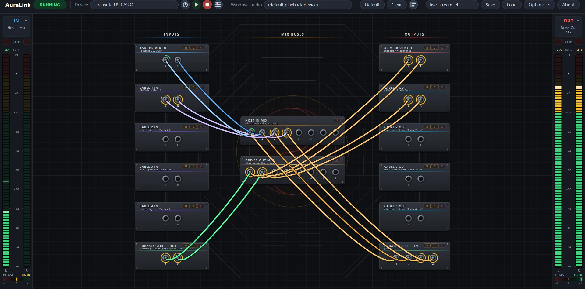

AuraLink Studio / AuraLink Router
Đang hoạt động · v0.9.0 · WindowsBình thường mở DAW là mất tiếng ở mọi ứng dụng khác. AuraLink Router gỡ đúng chỗ đó: DAW, âm thanh Windows, trình duyệt, OBS cùng chạy trên một card — rồi bạn tự kéo dây quyết định tiếng nào đi đâu. Thay cho ASIO Link Pro đã ngừng phát triển.

Mỗi dòng dưới đây đã được đo, không phải hứa hẹn.
ASIO Link Pro là công cụ tốt nhất trong lĩnh vực này trên Windows và không có phần thay thế — tác giả John Shield qua đời, phần mềm dừng lại. Nó vẫn thắng về chức năng, chỉ thua ở giao diện cũ kỹ không ai bảo trì nổi. AuraLink nhận đúng ván cược đó: khớp chức năng đến từng mẫu, cho nó một giao diện đọc được.
Tải AuraLink Router →